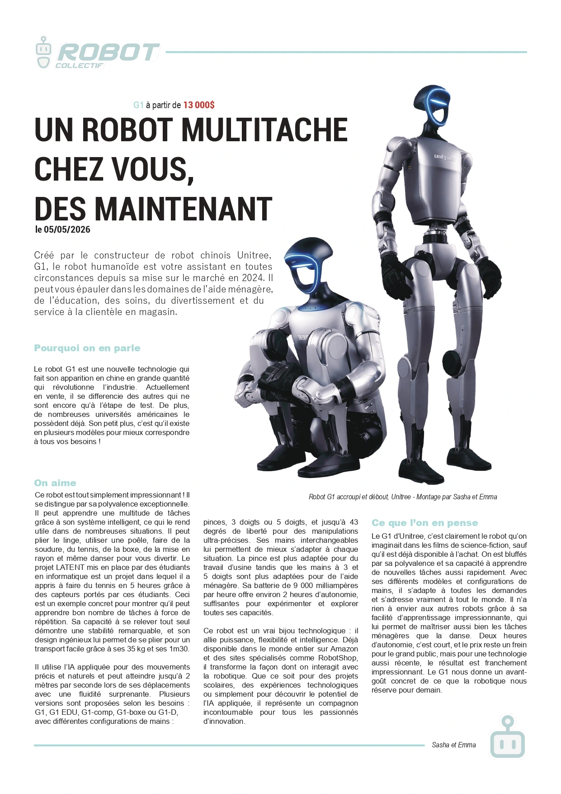
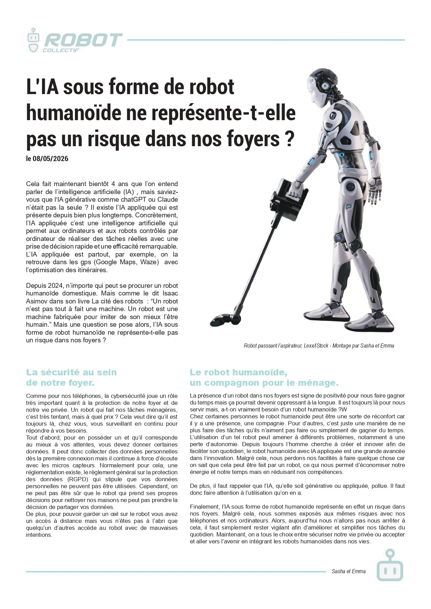

Retour aux projets
Article et chronique
Année2026
CadreProjet d'école
OutilsInDesign
Mon rôleConception et réalisation
Ce projet avait pour objectif de concevoir un article et une chronique pour un blog sur le thème des robots humanoïdes domestiques. La première phase s'est articulée autour du travail de rédaction en cours de communication, en respectant les spécificités propres à l'article et à la chronique. En parallèle, dans le cadre du cours de stratégie de communication, nous avons créé en groupe l'identité du blog nommé « Robot Collectif », son logo ainsi qu'une ligne éditoriale claire et précise. Enfin, nous avons mis en page l'ensemble des contenus sous la forme de maquettes de magazine.

